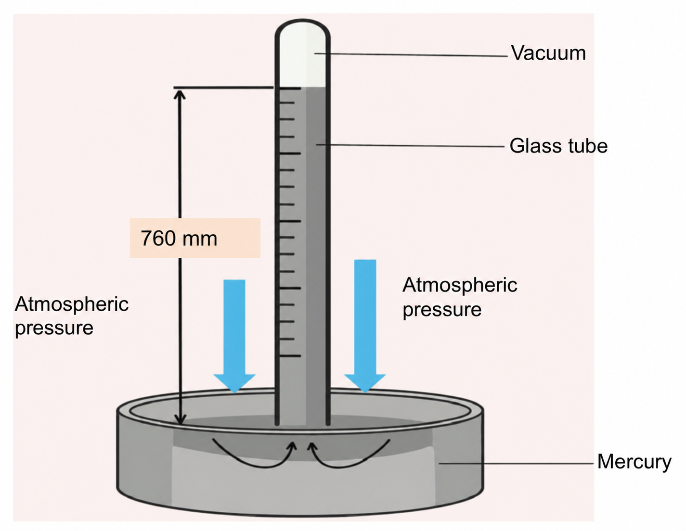
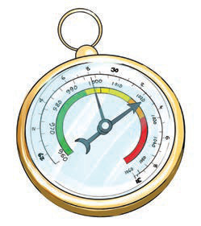
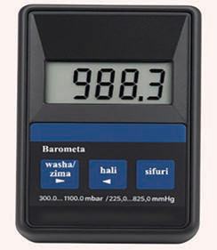

Watch or listen to the weather forecast from mass media, and then give a summary about the elements of weather that have been reported.
Measuring atmospheric pressure
Atmospheric pressure is measured in millibars using an instrument called barometer. There are three main types of barometers: mercury barometers, aneroid barometers, and digital barometers. All three types serve the same function of recording atmospheric pressure. A mercury barometer is a long glass tube with a measuring scale. The tube is filled with mercury and placed in a container with more mercury. When the atmospheric pressure changes, the level of mercury in the tube goes up or down. If the mercury is higher, it means the atmospheric pressure is high. If it’s lower, the atmospheric pressure is low. Many weather stations use mercury barometers because they are bigger and easier to read than aneroid barometers.
A digital barometer has an atomic clock that uses electronic sensors to measure atmospheric pressure. It gives information about atmospheric pressure more accurately and quickly than mercury and aneroid barometers. Figure 6 shows the three types of barometers: a mercury barometer, an aneroid barometer, and a digital barometer.


